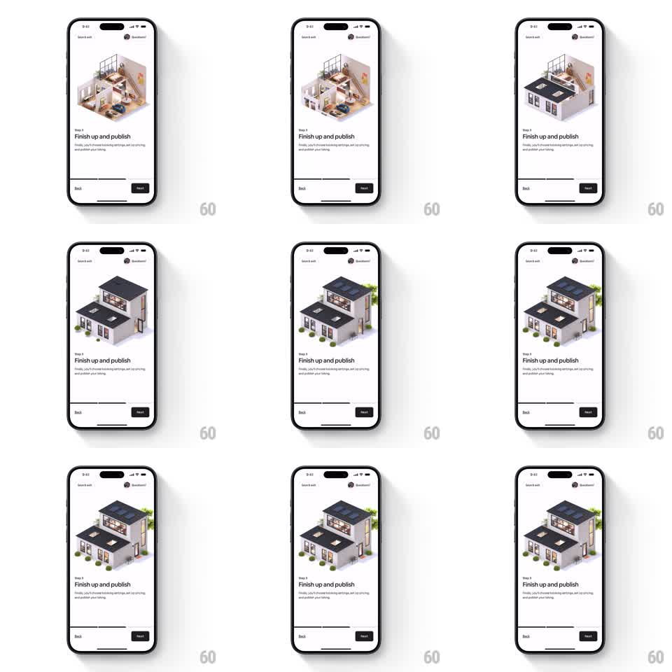

Media
Frame-by-frame

Rebuild this animation 1:1: Airbnb host onboarding step 3 ("Finish up and publish") - an isometric 3D house that starts as an open cutaway and closes itself up: the roof sections lower and lock, the walls seal, and trees pop in around the finished home.

Rebuild this animation 1:1: Airbnb host onboarding step 3 ("Finish up and publish") - an isometric 3D house that starts as an open cutaway and closes itself up: the roof sections lower and lock, the walls seal, and trees pop in around the finished home.
## Integration
Integration: stack-agnostic spec - springs given as stiffness/damping, timed motions as duration + curve; map every value to your framework and animation library of choice.
## Scene
Same onboarding layout as the other steps: illustration top, "Step 3" + headline + copy, Back / Next footer. The illustration begins as the open two-story cutaway and ends as a closed house with dark gabled roofs, solar panels, and greenery.
## Motion spec
Pattern: one-shot build sequence, ~2.5s total.
- Phase 1 (0-600ms): upper walls pivot up from the floor plate and seal (rotateX -90deg -> 0, ease-out).
- Phase 2 (500-1200ms): roof sections lower from above with a soft settle (translateY -60 -> 0 with a small 4px overshoot, spring ~200/20); skylights/solar panels fade in on the roof.
- Phase 3 (1100-1800ms): trees and shrubs pop in around the house (scale 0 -> 1, spring ~300/16, 60ms stagger, random order).
- Settle: house sits still; a faint shadow grows under the structure as it completes (300ms).
## Calibration
- The roof landing needs the small overshoot - a plain slide reads as UI, a settle reads as weight.
- Trees popping last is the reward beat; keep the 60ms stagger tight.
## Reduced motion
Cut to the finished house with a 300ms crossfade.
## Don't miss
- Pivots use the floor edge as the hinge, not element centers.
- Shadow appears only after the structure closes - it grounds the final state.